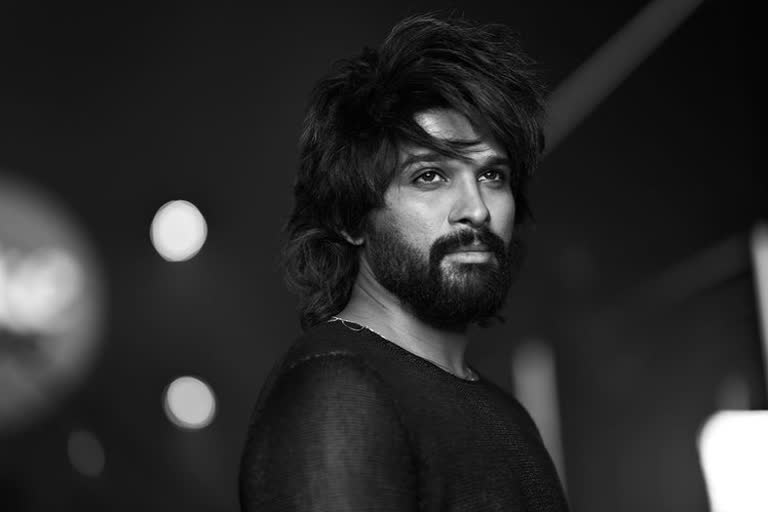

Photography

Portrait Photography
Photography is the art, application, and practice of creating durable images by recording light, either electronically by means of an image sensor, or chemically by means of a light-sensitive material such as photographic film.
Portrait photography, or portraiture, is a type of photography aimed toward capturing the personality of a person or group of people by using effective lighting, backdrops, and poses. A portrait photograph may be artistic or clinical.
For models model photography.
Fashion photography is a genre of photography which is devoted to displaying clothing and other fashion items, sometimes haute couture. It typically consists of a fashion photographer taking a picture of a dressed model in a photographic studio or an outside setting. It originates from the clothing and fashion industries, and while some of fashion photography has been elevated as art, it is still primarily used for clothing, perfumes and beauty products.[1]
Fashion photography is most often conducted for advertisements or fashion magazines such as Vogue, Vanity Fair, or Elle. It has grown into becoming a necessary way for designers to get their work out to the public. Fashion photography has developed its own aesthetic in which the clothes and fashions are enhanced by the presence of exotic locations or accessories.
CELL:9700887773.